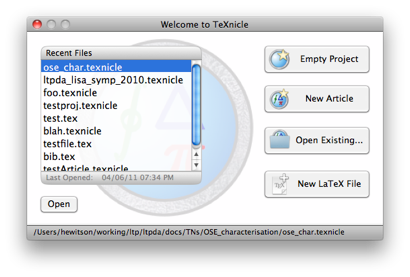
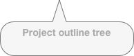
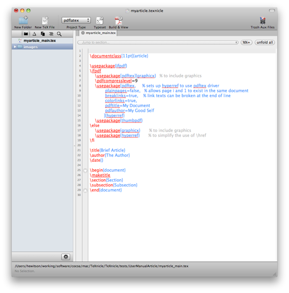
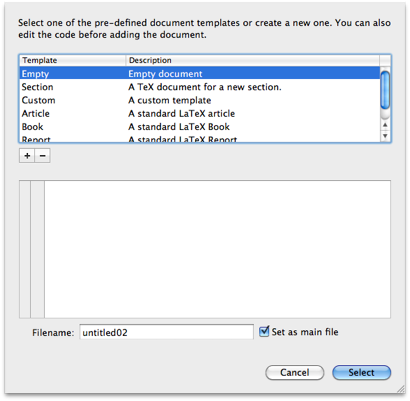

Getting started with TeXnicle Projects

TeXnicle allows you to organise your LaTeX files in to projects. A project results in a single compiled document. Your project can contain all kinds of files. TeXnicle is able to edit any text-based file type in its internal editor; for other file types, an external editor will be launched when required.
To create your first project, launch TeXnicle, and you should see if the “Welcome To TeXnicle” window. (If you don’t you can open it from the menu “Window->Welcome To TeXnicle”.)

From there you can open an existing project, start a new empty project, or create a standard article project. If you click on “New Article” you will be prompted to give a name and location for the TeXnicle project file on disk. Once done, you will get a new project window like the one below:



You will see that the main article (in bold in the project tree) is already open and configured to produce a simple LaTeX article. You can already typeset and view this article by clicking on the “Build & View” toolbar button or by the menu “Project -> Typeset & View”.
You can now add more files to the project by clicking on the action () button at the bottom to add existing files or by clicking the “New TeX File” toolbar button and selecting from the file templates. Under the project menu you will also find options to add new arbitrary files to the project.
Let’s add a new file to the project. First deselect all files in the project tree (cmd-click) to ensure the new file will be added to the base of the tree. Click the “New TeX File” toolbar button. You should be presented with a new file template window like the one below:


Select the “Section” template, change the filename to something more sensible like “introduction”, uncheck the “Set as main file” button and click select. You will now have a new file in the project ready to edit.
To include the new file in the document, you need to use a LaTeX input statement. Select the main file in the project tree and add an include statement just before the \end{document} statement.
Firstly you will note that TeXnicle automatically completes your brackets when you type the opening bracket. With the cursor inside the two brackets, hit the escape key (or select “Edit -> Smart Complete” from the menu bar). You should get a popup which allows you to choose which project file you want to include:

Double click the “introduction.tex” file or navigate with the arrow keys to select it then hit enter; TeXnicle will then complete your input statement.